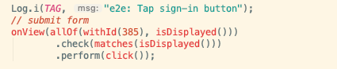
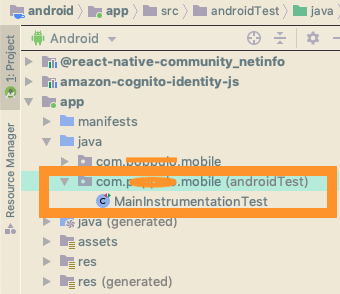

[Intro]
Purpose of this text is to show how view generated by RN code can be accessed from Espresso and how you can query those views in order to access required elements. Using Espresso would be a lot easier if you could use a dedicated resource-id. At the moment, it looks like this feature will not be available in the near future. An alternative option is to choose a different testing framework, e.g. cross platform. In our case, the factor that limited the choice of frameworks used for testing is the platform selected as device farm. Where tests are executed on real devices.
[Querying elements]
The main feature of React Native is that all views are generated automatically for both platforms using JavaScript code. That’s convenient, but if we decide to write some test scripts using native frameworks, view hierarchy inspected on iOS and Android can surprisingly differ… When building tests, use Android Studio’s Layout Inspector to see what a React Native view is actually mapped to in Android’s native environment.
Also you must keep in mind that ID’s generated by RN can be different when running app on emulator and on live device. So if you are planning to use ID for your test, make sure that it’s a static view and won't be affected by any data fetched via ajax from the server. During my play with those “id” references, I realized that screen which was presenting user’s posts has been generating different element id’s, everytime a new post was added to the list. So, this method was not suitable for this particular scenario.
Currently there is no way to set resource-id with react-native, so, to make complex actions you need to write some code (like wait for elements), other things seems to work quite well via android studio 'record espresso test' button. There you can generate query to the view for the element you are looking for, and use one of the below methods to perform action on it:
- use prop accessibilityLabel as id for elements (eg. "elementId")
- use onView(allOf(withContentDescription("elementId"), isDisplayed()))
[Wait/Delay]
Sometimes your test will fail at the very beginning, even before starting your application. That happened to me many times. In order to avoid that, I added small custom wait function, which is just testing the view, checking if the element is there and visible.
[Closing words]
Internet applications, mobile apps, regardless of their purpose, require testing. Testing allows you to check whether the initial assumptions of the system have been met, whether the application works without error and whether the application can be run on the production server, client device.
Instrumentation tests run on a device or an emulator. In the background, your app will be installed and then a testing app will also be installed which will control your app, launching it and running UI tests as needed.
Espresso allows you to automatically simulate user actions in the application and check the expected result on the UI side, which can improve User Experience of the app. The basic API provided is small, simple, intuitive and is based on interaction and assertion of view states. It is designed to operate on specific views and selected elements of the view collection. Espresso works quickly and ensures proper management of the main thread, thanks to which it runs test commands at the right time, which frees the programmer from the obligation to create temporary workarounds. At least in most cases.
[Start with Espresso]
In order to start writing Espresso tests you need to launch your Android Studio and install Espresso plugin.
To create your first test and generate the test class, you can run Espresso recorder, perform a simple action and save the results.
And that action will produce a test class for you.
And that is it, now you can start building tests for your app.